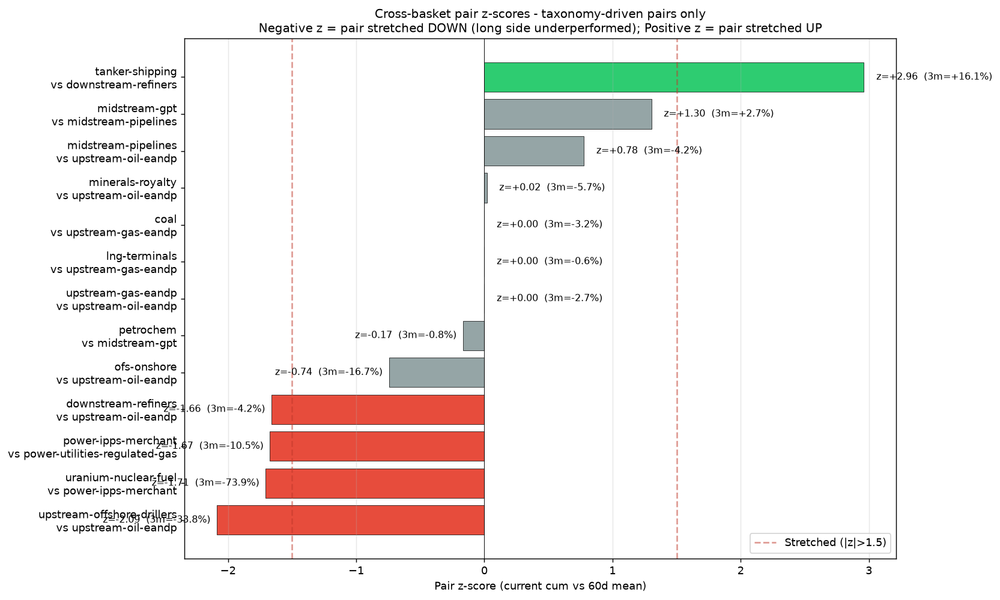
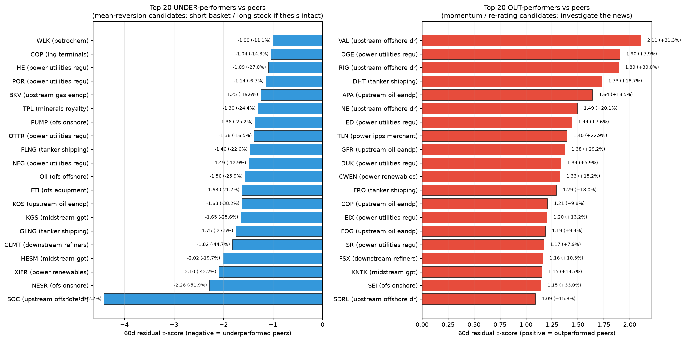
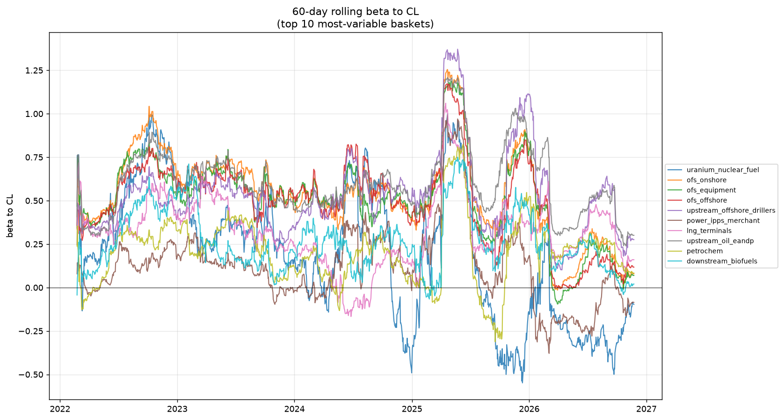
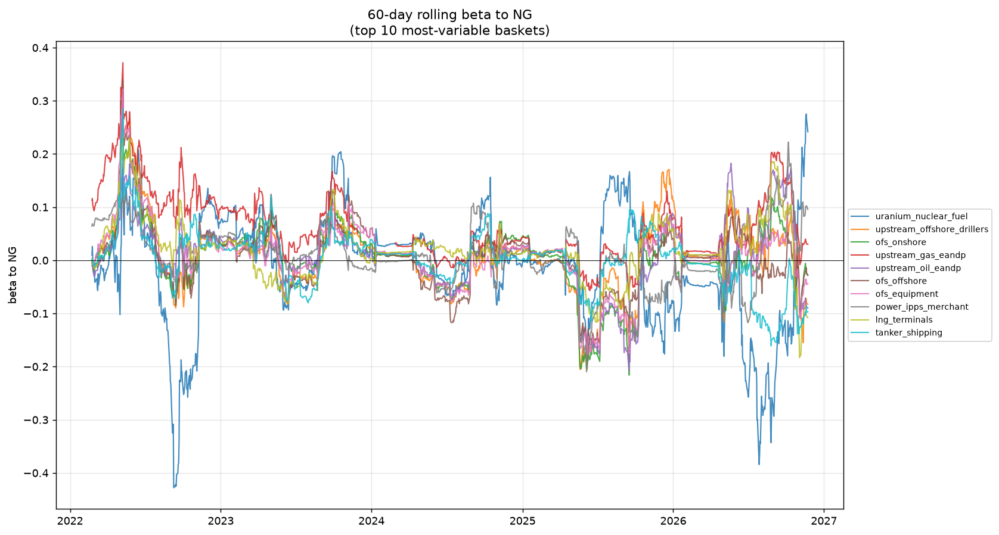
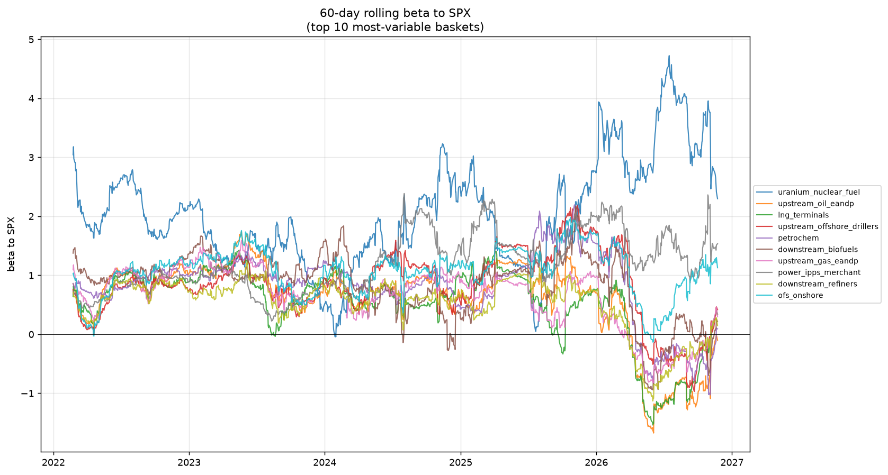
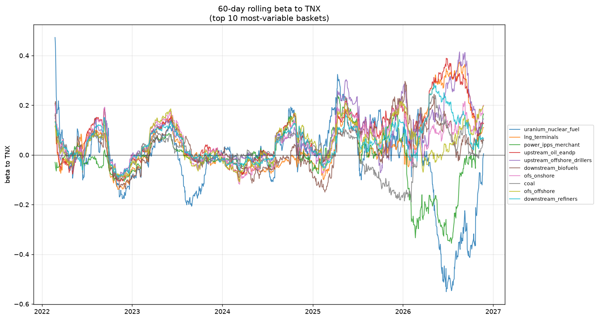

Daily returns, 5y, 60d rolling windows where applicable

| Long | Short | Thesis | z (60d) | 1y corr | 1m | 3m | Vol (ann) |
|---|---|---|---|---|---|---|---|
| tanker_shipping | downstream_refiners | Crude/product shipping vs refining | +2.96 | 0.24 | +15.5% | +16.1% | 32.6% |
| upstream_offshore_drillers | upstream_oil_eandp | Offshore renaissance vs onshore | -2.09 | 0.69 | -22.0% | -33.8% | 27.8% |
| uranium_nuclear_fuel | power_ipps_merchant | Nuclear fuel vs nuclear power | -1.71 | 0.54 | -19.3% | -73.9% | 61.3% |
| power_ipps_merchant | power_utilities_regulated_gas | Merchant power AI thesis | -1.67 | 0.17 | -5.7% | -10.5% | 37.0% |
| downstream_refiners | upstream_oil_eandp | Long refining margin (crack spread) | -1.66 | 0.59 | -6.1% | -4.2% | 25.7% |
| midstream_gpt | midstream_pipelines | Wellhead activity vs long-haul | +1.30 | 0.76 | +3.2% | +2.7% | 13.8% |
| midstream_pipelines | upstream_oil_eandp | Fee-based vs commodity exposure | +0.78 | 0.62 | +12.6% | -4.2% | 26.7% |
| ofs_onshore | upstream_oil_eandp | Service intensity vs E&P capex | -0.74 | 0.57 | +7.6% | -16.7% | 23.4% |
| petrochem | midstream_gpt | Petchem demand vs NGL feedstock supply | -0.17 | 0.25 | -3.7% | -0.8% | 29.6% |
| minerals_royalty | upstream_oil_eandp | Royalty (no opex) vs operating E&P | +0.02 | 0.80 | +7.7% | -5.7% | 19.9% |
| upstream_gas_eandp | upstream_oil_eandp | Gas vs oil commodity exposure | +0.00 | 0.69 | +9.9% | -2.7% | nan% |
| lng_terminals | upstream_gas_eandp | LNG terminal margin vs gas producer | +0.00 | 0.55 | +7.9% | -0.6% | nan% |
| coal | upstream_gas_eandp | Coal-gas substitution in power | +0.00 | 0.39 | +2.9% | -3.2% | nan% |

| Ticker | Name | Node | z 60d | cum resid | β to basket | R² | |
|---|---|---|---|---|---|---|---|
| ↓ | SOC | Sable Offshore | upstream_offshore_drillers | -4.41 | -202.7% | 0.43 | 0.04 |
| ↓ | NESR | National Energy Services Reunited | ofs_onshore | -2.28 | -51.9% | 0.72 | 0.27 |
| ↓ | XIFR | XPLR Infrastructure (ex-NEP) | power_renewables | -2.10 | -42.2% | 0.87 | 0.24 |
| ↓ | HESM | Hess Midstream | midstream_gpt | -2.02 | -19.7% | 0.81 | 0.46 |
| ↓ | CLMT | Calumet | downstream_refiners | -1.82 | -44.7% | 0.78 | 0.19 |
| ↓ | GLNG | Golar LNG | tanker_shipping | -1.75 | -27.5% | 0.59 | 0.26 |
| ↓ | KGS | Kodiak Gas Services | midstream_gpt | -1.65 | -25.6% | 1.33 | 0.41 |
| ↓ | KOS | Kosmos Energy | upstream_oil_eandp | -1.63 | -38.2% | 1.43 | 0.52 |
| ↓ | FTI | TechnipFMC | ofs_equipment | -1.63 | -21.7% | 0.79 | 0.55 |
| ↓ | OII | Oceaneering International | ofs_offshore | -1.56 | -25.9% | 1.00 | 0.55 |
| ↓ | NFG | National Fuel Gas | power_utilities_regulated_ldc | -1.49 | -12.9% | 0.71 | 0.37 |
| ↓ | FLNG | FLEX LNG | tanker_shipping | -1.46 | -22.6% | 0.66 | 0.31 |
| ↓ | OTTR | Otter Tail | power_utilities_regulated_gas | -1.38 | -16.5% | 0.81 | 0.23 |
| ↓ | PUMP | ProPetro | ofs_onshore | -1.36 | -25.2% | 1.22 | 0.61 |
| ↓ | TPL | Texas Pacific Land | minerals_royalty | -1.30 | -24.4% | 1.07 | 0.32 |
| Ticker | Name | Node | z 60d | cum resid | β to basket | R² | |
|---|---|---|---|---|---|---|---|
| ↑ | VAL | Valaris | upstream_offshore_drillers | +2.11 | +31.3% | 0.96 | 0.62 |
| ↑ | OGE | OGE Energy | power_utilities_regulated_gas | +1.90 | +7.9% | 1.02 | 0.79 |
| ↑ | RIG | Transocean | upstream_offshore_drillers | +1.89 | +39.0% | 1.13 | 0.52 |
| ↑ | DHT | DHT Holdings | tanker_shipping | +1.73 | +18.7% | 1.02 | 0.68 |
| ↑ | APA | APA Corporation | upstream_oil_eandp | +1.64 | +18.5% | 1.17 | 0.76 |
| ↑ | NE | Noble Corp | upstream_offshore_drillers | +1.49 | +20.1% | 0.80 | 0.60 |
| ↑ | ED | Consolidated Edison | power_utilities_regulated_gas | +1.44 | +7.6% | 0.94 | 0.68 |
| ↑ | TLN | Talen Energy | power_ipps_merchant | +1.40 | +22.9% | 0.93 | 0.57 |
| ↑ | GFR | Greenfire Resources | upstream_oil_eandp | +1.38 | +29.2% | 0.39 | 0.10 |
| ↑ | DUK | Duke Energy | power_utilities_regulated_gas | +1.34 | +5.9% | 0.95 | 0.75 |
| ↑ | CWEN | Clearway Energy | power_renewables | +1.33 | +15.2% | 0.67 | 0.43 |
| ↑ | FRO | Frontline | tanker_shipping | +1.29 | +18.0% | 1.31 | 0.67 |
| ↑ | COP | ConocoPhillips | upstream_oil_eandp | +1.21 | +9.8% | 0.77 | 0.74 |
| ↑ | EIX | Edison International | power_utilities_regulated_gas | +1.20 | +13.2% | 1.13 | 0.40 |
| ↑ | EOG | EOG Resources | upstream_oil_eandp | +1.19 | +9.4% | 0.76 | 0.74 |
Baskets whose current 60d rolling beta is more than 2σ from its long-run mean. May indicate structural shift in driver sensitivity.
| Driver | Basket | Current β | LR mean β | Z-score | Direction |
|---|---|---|---|---|---|
| NG | power_renewables | +0.08 | +0.00 | +2.41 | increased |
| NG | uranium_nuclear_fuel | +0.24 | -0.01 | +2.36 | increased |
| NG | lng_terminals | -0.11 | +0.02 | -2.29 | decreased |
| NG | downstream_refiners | -0.09 | +0.00 | -2.23 | decreased |
| TNX | ofs_offshore | +0.20 | +0.04 | +2.02 | increased |



